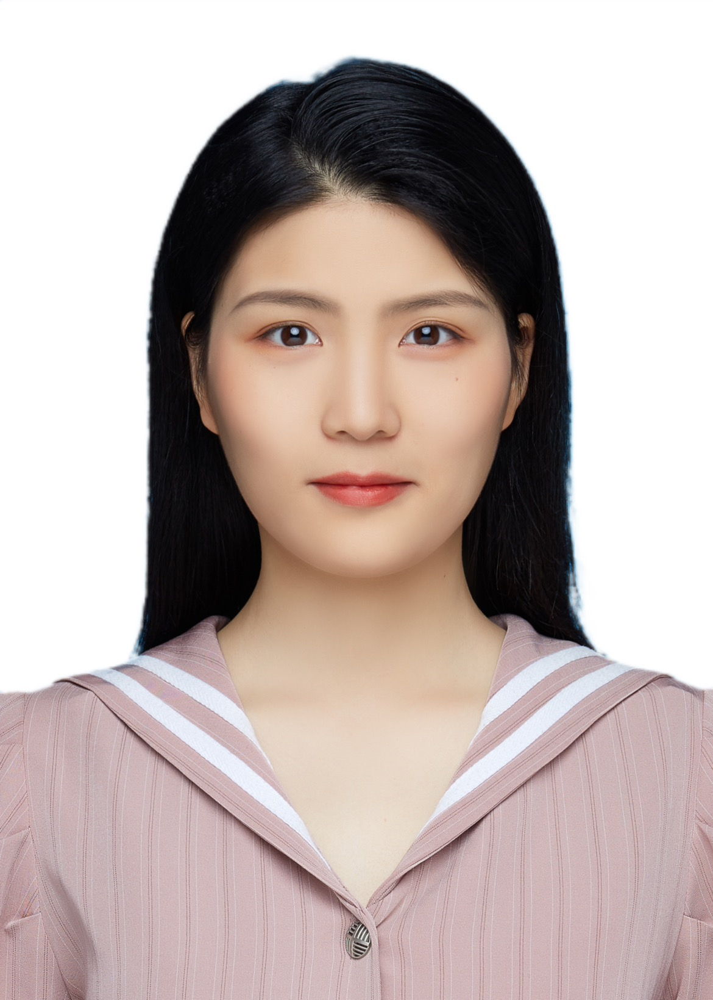

|  | Qian JINQian Jin, Ph.D. Student |
Biography
I am a Ph.D. candidate at the College of Integrated Circuits, Zhejiang University, under the co-supervision of Prof. Cheng Zhuo and Prof. Qi Sun since Fall 2022. Prior to that, I received my B.Eng. in Electronic Science and Technology from Wuhan University of Technology.
Research Interest
Machine Learning in EDA
Large Language Models (LLMs)
Publications
Conference papers
[C6] Qian Jin, Yumeng Liu, Yuqi Jiang, Qi Sun, Cheng Zhuo, “Unitho: A Unified Multi-Task Framework for Computational Lithography”, ACM/IEEE International Conference on Computer-Aided Design (ICCAD), 2025.
[C5] Qian Jin, Yuqi Jiang, Xudong Lu, Yumeng Liu, Yining Chen, Dawei Gao, Qi Sun, Cheng Zhuo, “SEM-CLIP: Precise Few-Shot Learning for Nanoscale Defect Detection in Scanning Electron Microscope Image”, ACM/IEEE International Conference on Computer-Aided Design (ICCAD), 2024.
[C4] Qian Jin, Yibo Qiao, Yining Chen, Cheng Zhuo, Qi Sun, “A SelectiveNet-Based Method for Defect Classification in Semiconductor Manufacturing”, Conference of Science and Technology for Integrated Circuits (CSTIC), 2024.
[C3] Yuqi Jiang, Qian Jin, Xudong Lu, Jinyuan Deng, Hao Geng, Hanming Wu, Qi Sun, Cheng Zhuo, “FabThink: A Wafer Analysis Multimodal LLM via Chain-of-Thought-Driven Retrieval Augmentation”, ACM/IEEE International Conference on Computer-Aided Design (ICCAD), 2025.
[C2] Yuqi Jiang, Xudong Lu, Qian Jin, Qi Sun, Hanming Wu, Cheng Zhuo, “FabGPT: An Efficient Large Multimodal Model for Complex Wafer Defect Knowledge Queries”, ACM/IEEE International Conference on Computer-Aided Design (ICCAD), 2024.
[C1] Yibo Qiao, Weiping Xie, Shunyuan Lou, Qian Jin, Lichao Zeng, Yining Chen, Qi Sun, Cheng Zhuo, “Minimizing Labeling, Maximizing Performance: A Novel Approach to Nanoscale Scanning Electron Microscope (SEM) Defect Segmentation”, ACM/IEEE Design Automation Conference (DAC), 2024.
Journal Papers
[J1] Qian Jin, Qingsong Peng, Yumeng Liu, Xiaotian Qiu, Qi Sun, “Recent advances in computational lithography technology”, Moore and More (MAM), 2025.
Awards
Third Prize in China postgraduate IC innovation competition, China, 2024
Jevarts Scholarship, ZJU, 2023
Excellent Graduate Student, ZJU, 2023
Qiushi PhD Fellowship, ZJU, 2022
National Scholarship, WUT, 2019, 202